Aula 1:
Introdução à disciplina de Controle Digital
SEL0359
2° semestre/2025
7 de agosto de 2025

Aviação
 |
Ex: controle de atitude, fly-by-wire
Rocket Landing System
Geração de energia
Ex: controle de potência gerada
Indústria
 |  |
Ex: controle de temperatura, vazão, nível...
Setor automotivo
 Fonte: https://salaodocarro.com.br/como-funciona/controle-de-tracao.html |  |
Medicina (Ex: Controle de Diabetes)
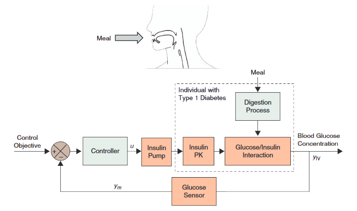


Self-balanced robot:
https://www.youtube.com/watch?v=38KVxZnBDZc
Self-balanced robot:
https://www.youtube.com/watch?v=38KVxZnBDZc
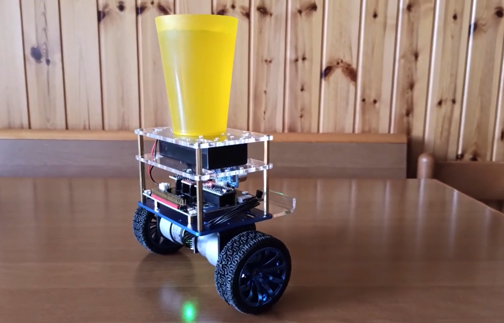
Self-balanced robot:
https://www.youtube.com/watch?v=38KVxZnBDZc

Self-balanced robot:
https://www.youtube.com/watch?v=38KVxZnBDZc

Self-balanced robot:
https://www.youtube.com/watch?v=38KVxZnBDZc

Self-balanced robot:
https://www.youtube.com/watch?v=38KVxZnBDZc


Como obter um modelo matemático que descreva a planta?
Técnicas de identificação de sistemas!
Tempo de súbida $(t_r)$
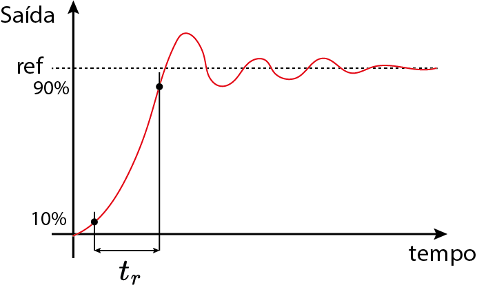Sobresinal $(M_p)$

Tempo de acomodação $(t_s)$
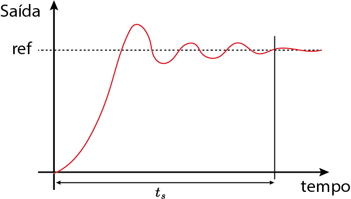Erro $(\epsilon)$

Analógico vs Digital
 |  |
| Resistores, capacitores, indutores e OpAmp. | Computador digital ($\mu C$) |
Analógico vs Digital
| 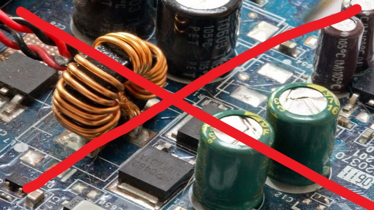 | |
| Resistores, capacitores, indutores e OpAmp. | Computador digital ($\mu C$) |
Computador digital ($\mu C$)
Vantagens:
|
|
Interface analógica/digital

Interface analógica/digital

Interface analógica/digital
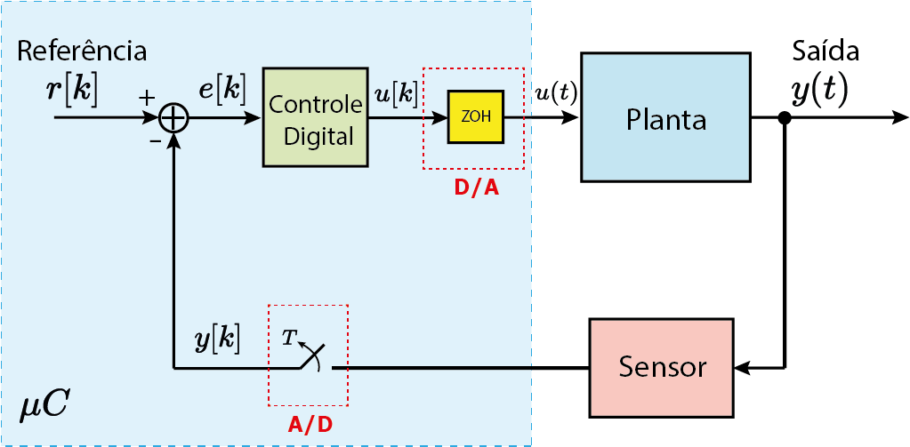
Interface analógica/digital

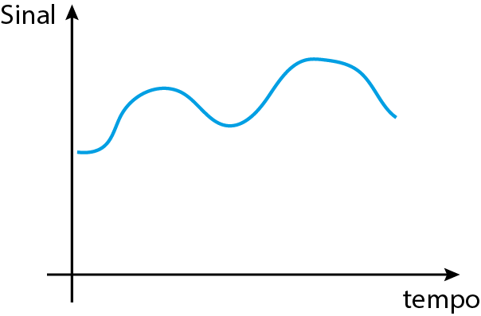
Amostragem
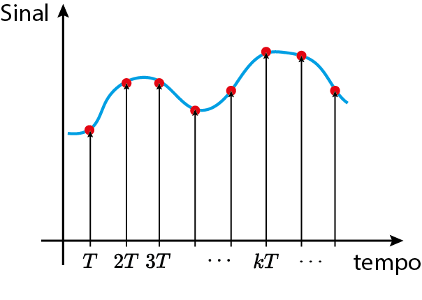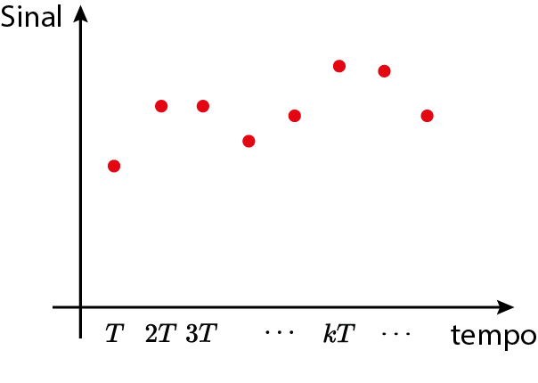

Quantização


Transformada Z
$$X(z)=\sum_{k=-\infty}^\infty x[k]z^{-k}$$
*Material complementar

On-off

Utilizado em geladeiras, ar-condicionados, caixas de água etc
On-off
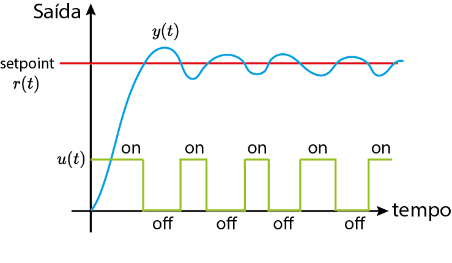PID

PID (tempo contínuo)

$C(s)=K_p+K_i\frac{1}{s}+K_ds$
PID (tempo discreto)

$C(z)=K_p+K_i\frac{1}{1-z^{-1}}+K_d(1-z^{-1})$
Integral Discreta vs Contínuo

PID (tempo discreto)
$C(z)=K_p+K_i\frac{1}{1-z^{-1}}+K_d(1-z^{-1})$
Realimentação de estados

Controle ótimo: LQR

Observador ótimo: Filtro de Kalman
- Simulações computacionais;
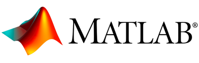